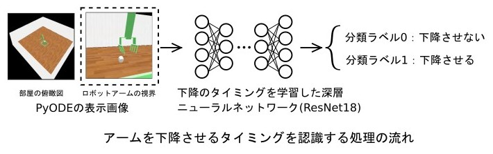

PyODEの物理演算+深層学習(ResNet18)
: ロボットビジョン2
「ロボットアームのボール拾い」
arm_robo_vision1.pyの実行例
ロボットアームの視界からボールを拾えるかどうかを判定して、拾えると認識したタイミングでアームを下降させます。 アームを下降させるかどうかの判定は、ボール拾いを学習させた深層学習モデル(Res-Net18)が行います。 下降のタイミング以外のロボットアームの動作は、あらかじめ決まっています。
今回のResNet18は、一直線上に並んだボールの配置しか学習していないので、2次元的にボールを配置したシーンでは、ボールを拾えなくなったりしました。 動画では、上手くボールを拾えるように、2次元的な配置を調整しています。

arm_robo_vision1.pyの実装
ODE-0.16.4付属のtutorial3.pyを変更してarm_robo_vision1.pyを作成しました。
深層学習モデル(Res-Net18)の学習
今回は、991パターンの学習用画像を作成し、深層学習モデル(Res-Net18)の学習に使いました。 小規模なデータセットの「CIFAR-10」でも画像数は6万枚なので、 今回の991パターンの学習画像は少なすぎですが、深層ニューラルネットワークを使った機械学習ということで、「深層学習」という言葉を使っています。